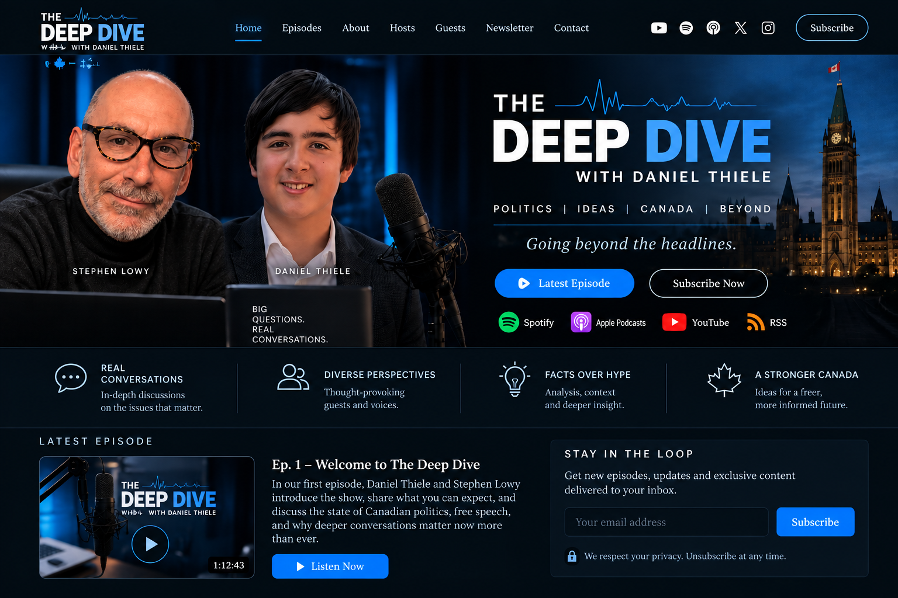

╱╲╱╲╱╲╱╲╱
THE
DEEP DIVE
WITH DANIEL THIELE
POLITICS | IDEAS | CANADA | BEYOND
Going beyond the headlines.
● Spotify◉ Apple Podcasts▶ YouTube◔ RSS
•••
REAL CONVERSATIONS
In-depth discussions on the issues that matter.
♙
DIVERSE PERSPECTIVES
Thought-provoking guests and voices.
💡
FACTS OVER HYPE
Analysis, context and deeper insight.
🍁
A STRONGER CANADA
Ideas for a freer, more informed future.
LATEST EPISODE
▶
Ep. 1 – Welcome to The Deep Dive
In our first episode, Daniel Thiele and Stephen Lowy introduce the show, share what you can expect, and discuss the state of Canadian politics, free speech, and why deeper conversations matter now more than ever.
▶ Listen Now